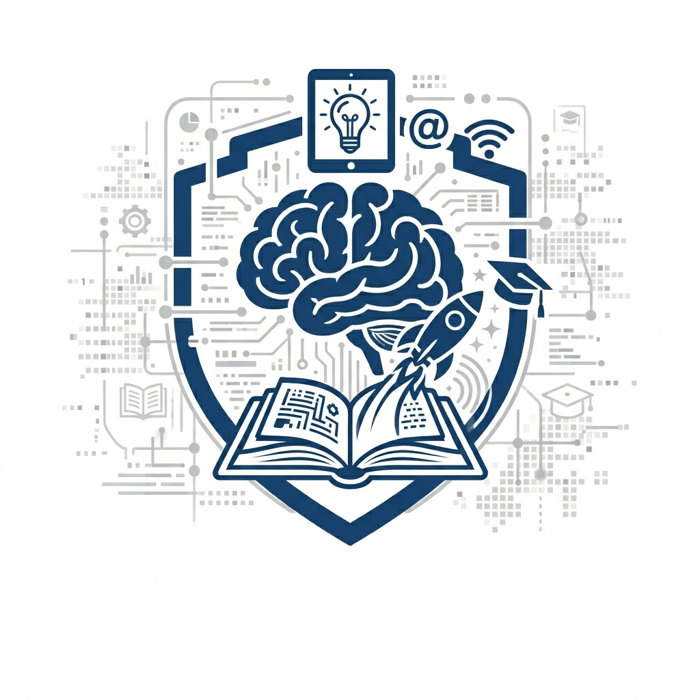

Meu primeiro post
Por: Roseli Prado da Silva
Boas vindas ao meu novo blog! Aqui vou compartilhar dicas de programação e curiosidades da área de tecnologia.
Vou compartilhar conhecimentos sobre tecnologia e programação

Por: Roseli Prado da Silva
Boas vindas ao meu novo blog! Aqui vou compartilhar dicas de programação e curiosidades da área de tecnologia.
Por: Roseli Prado da Silva
A tecnologia não avança mais em passos lineares; ela evolui em saltos exponenciais. Para profissionais, estudantes e entusiastas, manter-se atualizado não é apenas uma vantagem competitiva, mas uma necessidade de sobrevivência digital.
Por: Roseli Prado da Silva
Engelbart estava procurando uma maneira mais intuitiva de interagir com as telas dos computadores,
que na época eram controlados apenas por comandos de texto digitados no teclado.
O mouse nasceu para permitir que as pessoas "apontassem e clicassem" em elementos na tela,
revolucionando a computação
pessoal dali em diante.
O Design e a Estrutura.
O corpo: Uma caixa de madeira esculpida à mão.
O botão: Havia apenas um pequeno botão vermelho no canto superior direito.
O cabo: O fio saía da parte de trás do dispositivo.
Por lembrar a cauda de um rato, a equipe começou a chamá-lo carinhosamente de "mouse" (rato,
em
inglês), e o nome pegou para sempre.
Fonte: National Museum of Computing